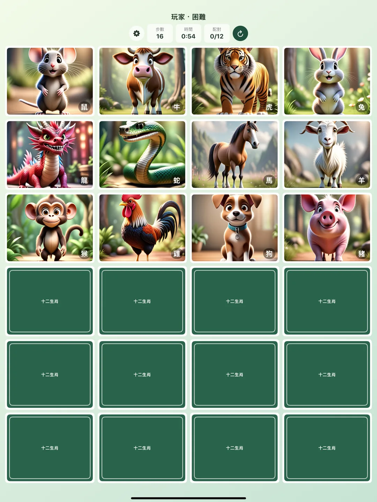
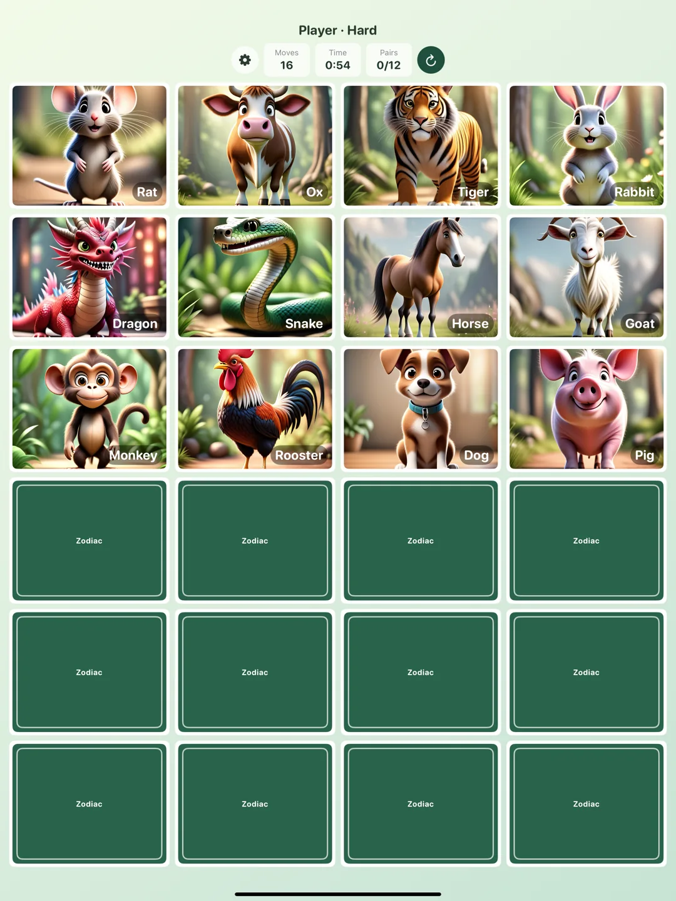

生肖翻牌配對
《生肖翻牌配對》是一款簡單、可愛、適合短時間遊玩的記憶配對小遊戲。遊戲以十二生肖為主題，玩家一次翻開兩張卡牌，找出相同的生肖圖片完成配對。
iOS 與 visionOS 版本皆已上架，可以在 iPhone、iPad 或 Apple Vision Pro 上遊玩。
你可以輸入暱稱、選擇難度，挑戰用更少步數與更短時間完成遊戲。它是一款輕量、直覺、沒有壓力的小遊戲，適合通勤、休息、親子互動，或單純想訓練記憶力時打開來玩一局。
{kind=link}

遊戲特色
- 可愛的十二生肖圖片
- 簡單、中等、困難三種難度
- 步數與遊戲時間雙重挑戰
- 依難度分開的 Top 15 排行榜
- 可切換步數排名或時間排名
- 前三名有金、銀、銅特別標誌
- 音效與震動可自由開關
- 第一次開啟提供簡短教學
- 支援繁體中文、簡體中文、英文、日文、韓文
玩法
- 輸入暱稱。
- 選擇簡單、中等或困難難度。
- 一次翻開兩張卡牌，記住生肖圖片的位置。
- 找出所有相同生肖配對，完成後查看步數、時間與本機排行榜。
隱私與資料
生肖翻牌配對不需要登入、網路存取、使用者帳號、定位、相機、麥克風、聯絡人、照片、追蹤、App 內購買或第三方服務。
排行榜資料、音效設定、震動設定與教學狀態只會儲存在裝置本機。排行榜是單一裝置上的本機排行榜，不會上傳或對外分享。
Zodiac Pair Match
Zodiac Pair Match is a simple, cute, short-session memory matching game themed around the twelve zodiac animals. Players flip two cards at a time and try to find matching zodiac images until every pair is complete.
The iOS and visionOS versions are both live, so you can play on iPhone, iPad, or Apple Vision Pro.
The player can enter a nickname, choose a difficulty level, and challenge themselves to finish the game with fewer moves and less time. It is lightweight, direct, and low-pressure, making it easy to play during a commute, a break, family time, or a quick memory-training moment.
- Devices
- iPhone / iPad / Apple Vision Pro
- Download
- Free download
Free to use.
{kind=link}

Features
- Cute twelve zodiac animal images
- Easy, Medium, and Hard difficulty levels
- Move count and game-time challenges
- Top 15 local leaderboards separated by difficulty
- Switchable ranking by moves or time
- Gold, silver, and bronze markers for the top three results
- Sound effects and haptics that can be turned on or off
- A short onboarding tutorial on first launch
- Traditional Chinese, Simplified Chinese, English, Japanese, and Korean localization
How to Play
- Enter a nickname.
- Choose Easy, Medium, or Hard.
- Flip two cards at a time and remember each zodiac position.
- Match all pairs, then review your move count, time, and local leaderboard result.
Privacy and Data
Zodiac Pair Match does not require login, network access, user accounts, location, camera, microphone, contacts, photos, tracking, in-app purchases, or third-party services.
Leaderboard data, sound settings, haptic settings, and onboarding state are stored locally on the device. The leaderboard is a local device leaderboard only and is not uploaded or shared externally.